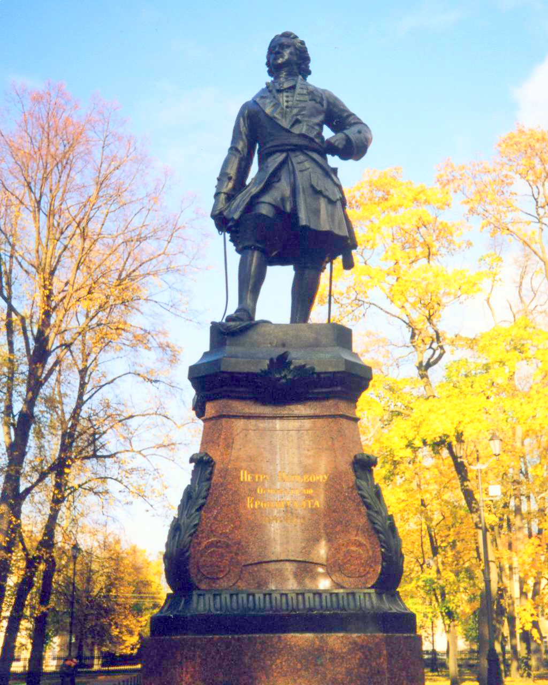
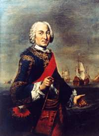
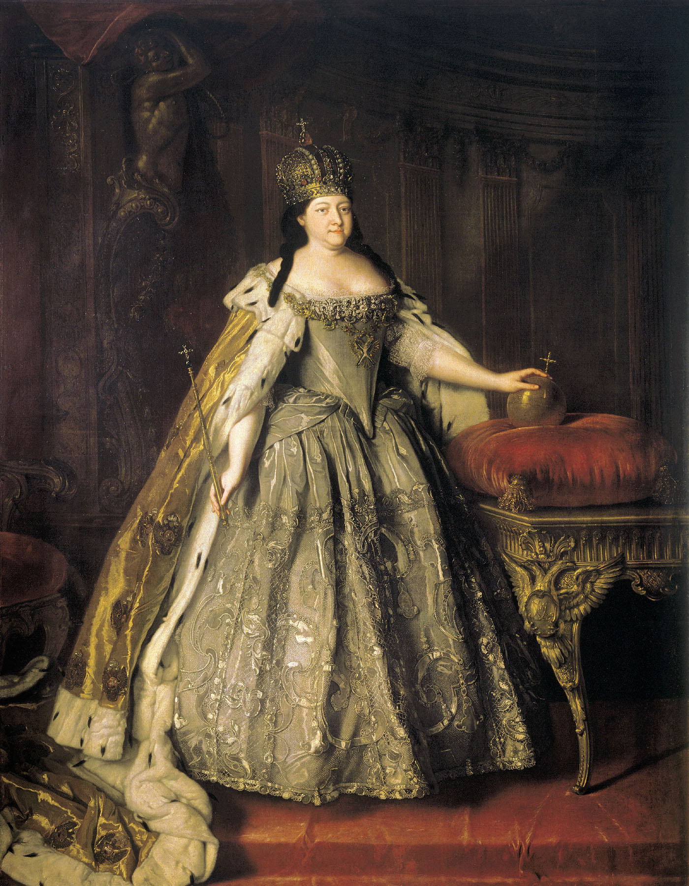
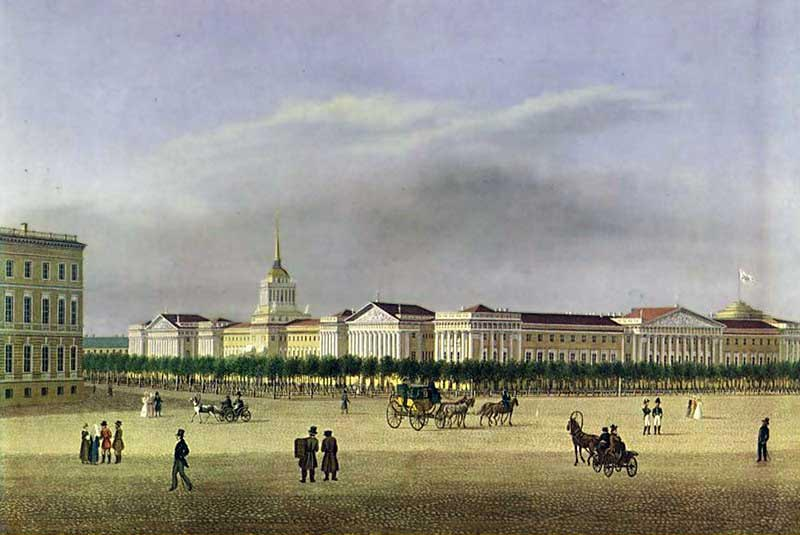
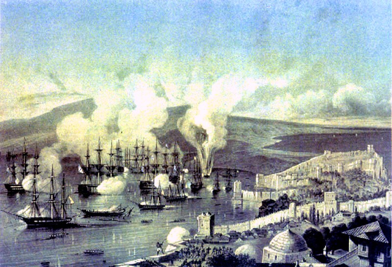
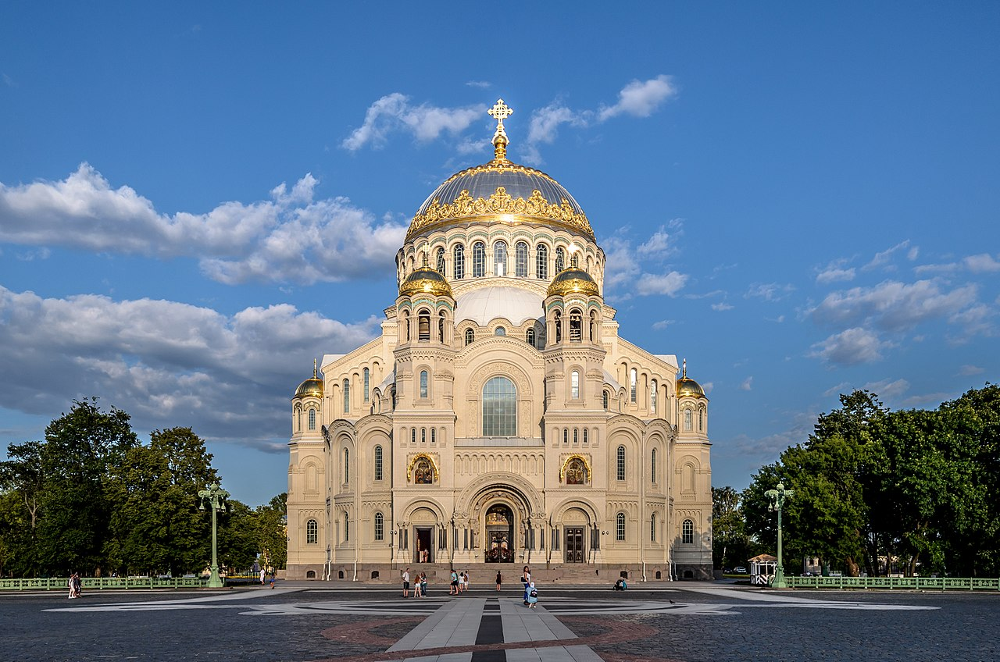
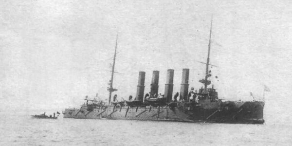
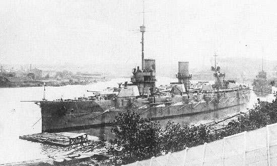
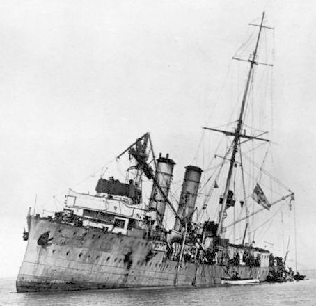

Истоки
Первое трёхмачтовое судно, построенное в России по европейскому стандарту, было спущено на воду в Балахне в 1636 году во время правления царя Михаила Фёдоровича. Корабль был построен кораблестроителями из Гольштейна, был назван «Фредерик» и ходил под флагом Гольштейна. В своё первое плавание «Фредерик» отправился 30 июля (9 августа по Новому стилю) 1636 года из Нижнего Новгорода вниз по Волге, держа путь в Персию. 27 октября (6 ноября по Новому стилю) 1636 года «Фредерик» вышел в Каспийское море, а 12 ноября (22 ноября по новому стилю) он попал в мощный шторм, продолжавшийся три дня. Корабль был сильно поврежден и посажен на мель, чтобы спасти груз и команду. В дальнейшем он был вытащен на берег в десяти милях от Дербента и разграблен местными жителями.
22 июля (1 августа по новому стилю) 1656 года русская гребная флотилия воеводы Петра Ивановича Потёмкина разбила эскадру шведских кораблей близ острова Котлин и захватила 6-пушечную галеру. Сражение у острова Котлин рассматривается историками как первая документированная русская победа на море в новое время. Ранее, 30 июня (10 июля по новому стилю) 1656 года, эта же флотилия воеводы Потёмкина участвовала во взятии шведской крепости Ниеншанц (Канцы), расположенной в устье реки Охты при впадении Охты в Неву[Прим. 4].
Во время русско-шведской войны 1656—1658 годов, русские войска захватили шведские крепости Дюнамюнде и Кокенгаузен (переименован в Царевичев-Дмитриев) на Западной Двине. Боярин Афанасий Ордин-Нащокин основал судостроительную верфь в Царевичеве-Дмитриеве и начал строительство кораблей для плавания на Балтийском море. По окончании войны Россия и Швеция заключили Кардисский мирный договор в 1661 году, по результатам которого Россия возвратила Швеции все завоёванные территории и была вынуждена уничтожить все корабли, заложенные в Царевичеве-Дмитриеве.
Боярин Ордин-Нащокин не потерял своих надежд на строительство флота и повернулся к реке Волге и Каспийскому морю. Получив царское разрешение, боярин Афанасий Лаврентьевич пригласил датских кораблестроителей в село Дединово, расположенное на реке Оке. Строительство кораблей началось зимой 1667 года. В течение двух лет они закончили строительство четырёх кораблей: фрегата «Орёл», и трёх меньших судов. «Орёл» закончил своё плавание так же плачевно, как и «Фредерик» — он был захвачен в Астрахани взбунтовавшимися казаками Степана Разина. Казаки ограбили и затем, предположительно, сожгли этот корабль.
Основная статья: Брандт, Карштен
В XVII веке русские купцы и казаки переплыли через Белое море на кочах, достигли устьев рек Лена, Колыма и Индигирка, и основали поселения в регионе верхнего Амура. Самым известным из этих первооткрывателей является Семён Иванович Дежнёв — в 1648 году он проплыл по Северному Ледовитому океану всю длину современной России, обогнул Чукотский полуостров, пересёк Берингово море и вышел в Тихий океан.
Флот Петра I
Во время Второго Азовского похода 1696 года против Турции первый раз русские выдвинули 2 линейных корабля, 4 брандера, 23 галеры и 1300 стругов, построенных на реке Воронеж. После завоевания крепости Азов боярская дума обсудила рапорт Петра I об этом походе и решила начать строительство военно-морского флота 20 (30) октября 1696 года. Эта дата считается официальным днем рождения регулярного Военно-морского флота России, корабли которого были построены на верфях Воронежского адмиралтейства.
Балтийский флот России был построен во время Великой Северной войны 1700—1721 годов. Строительство галерного флота было начато в 1702—1704 годах на нескольких верфях, находящихся на эстуариях рек Сясь, Луга и Олонка. Для защиты завоёванных побережий и для атак на вражеские морские пути сообщения в Балтийском море был создан парусный флот из кораблей, построенных в России и купленных в других странах. В 1703—1723 годах главная база балтийского флота находилась в Санкт-Петербурге, а после этого — в Кронштадте. Новые базы были созданы в Выборге, Гельсингфорсе, Ревеле и Або. Вначале владимирский приказ управлял судостроительными делами, позднее эта функция была передана адмиралтейскому приказу.
В 1725 году русский флот имел 130 парусных кораблей, включая в себя 36 линейных кораблей, 9 фрегатов, 3 шнявы, 5 бандер и 77 вспомогательных судов. Гребной флот состоял из 396 кораблей, включая в себя 253 галеры и скампавеи и 143 бригантины. Корабли были построены на 24 верфях включая верфи в Воронеже, Казани, Переяславле, Архангельске, Олонце, Петербурге и Астрахани.
"Новое в России дело" Худ. Ю.Кушевский

Военно-морские офицеры происходили из дворян — матросы были рекрутами из простонародья. Срок службы во флоте был пожизненным. Молодые офицеры обучались в школе математических и навигационных наук основанной в 1701 году и часто посылались для обучения и практики за границу. Иностранцы часто нанимались для военно-морской службы, например шотландец Томас Гордон — командир Кронштадтского порта. В 1718 году была образована Адмиралтейств-коллегия — высший орган управления Военно-Морского Флота в России.
Принципы организации военно-морского флота, методы образования и практики для подготовки будущих кадров, а также и методы проведения военных действий были написаны в морском уставе 1720 года — документе, основанном на опыте зарубежных стран. Пётр Первый, Федор Апраксин, Алексей Сенявин, Наум Сенявин, Михаил Голицын и другие считаются основателями искусства морского боя в России. Принципы военно-морского дела были дальше развиты Григорием Спиридовым, Фёдором Ушаковым и Дмитрием Сенявиным.
Сравнение российского Балтийского флота в 20-х годах XVIII века с флотами европейских стран (боеспособные линейные корабли)[С. 2]:
| Россия | Великобритания | Франция | Швеция | Дания | Турция |
|---|---|---|---|---|---|
| 1709 год — 0 1720 год — 25 |
1721 год — 79 (из 124 числившихся) |
1714 год — 66 1729 год — 45 |
1709 год — 48 1720 год — 22 |
1709 год — 42 1720 год — 25 |
1715 год — 42 |
Созданный императором Петром I флот к 20-м годам XVIII века достиг зенита своей боеспособности. В этот период начинает осуществляться введение нового штата флота, что выразилось в строительстве 54-пушечных кораблей и закладке в 1723 году первого 100-пушечного корабля «Петр Первый и Второй». Одновременно, с 1722 года резко снижаются темпы кораблестроения. В последние годы царствования Петра закладывалось не более 1-2 кораблей в год[С. 3] (в 1722 — 1, в 1723 — 1, в 1724 — 2, в 1725 — 1[С. 4]), а необходимое количество для поддержания штатного состава было 3 корабля в год[С. 3].
Состояние флота после смерти Петра I
После смерти Петра I дела в кораблестроении резко ухудшились. В 1726 году был заложен всего один 54-пушечный корабль, а в период с 1727 по 1730 годы не было заложено ни одного корабля[С. 3].
В 1727 году в составе корабельного флота насчитывалось 15 боеспособных линейных кораблей и 4 боеспособных фрегата[С. 5].
В 1728 году шведский посланник в России доносил своему правительству[С. 6]:
« «Несмотря на ежегодную постройку галер, русский галерный флот, сравнительно с прежним, сильно уменьшается; корабельный же приходит в прямое разорение, потому, что старые корабли все гнилы, так что более четырех или пяти линейных кораблей вывести в море нельзя, а постройка новых ослабела. В адмиралтействах же такое несмотрение, что флот и в три года нельзя привести в прежнее состояние, но об этом никто не думает». »

На конец 1731 года в составе корабельного флота числилось 36 линейных кораблей, 12 фрегатов и 2 шнявы[С. 7], но полностью боеспособными были только 29,63 % от штатного числа линейных кораблей, ещё 18,52 % могли действовать на Балтике только в самое благоприятное время года, без штормов[С. 8]. Всего Россия могла вывести в море 8 полностью боеспособных линейных кораблей и 5 в ближнее плавание на Балтике[С. 8]. Выбыли из строя все корабли крупных рангов — 90, 80, 70-пушечные. Боеспособными и частично боеспособными оставались только один 100-пушечный корабль, пять 66-пушечных и семь 56-62-пушечных[С. 9].
Относительно удовлетворительным было состояние галерного флота, в состав которого входило 120 галер. В 1726 году вице-адмирал Пётр Сиверс предложил ввести для галерного флота мирный штат, что было реализовано в 1728 году. Постоянно на флоте содержалось 90 галер на плаву, ещё на 30 галер хранились приготовленные для быстрой сборки леса[С. 10].
В правление Петра II резко снизилась интенсивность боевой подготовки экипажей флота. В апреле 1728 года император на заседании Верховного тайного совета приказал, чтобы из всего флота выходили в море только четыре фрегата и два флейта, а ещё пять фрегатов были готовы к крейсированию. Остальные корабли должны были оставаться в портах для «сбережения казны». На доводы флагманов, что необходимо постоянно держать флот на море, император ответил: «Когда нужда потребует употребить корабли, то я пойду в море; но я не намерен гулять по нем, как дедушка»[С. 11]. Плохое состояние казны и нерегулярные выплаты жалования вели к оттоку офицеров, что вызывало падение дисциплины среди солдат и матросов[С. 12].
Царствование Анны Иоанновны
По восшествии на престол и упразднении Верховного тайного совета императрица Анна Иоанновна первыми своими указами обратилась к проблеме восстановления флота. 21 июля (1 августа) 1730 года императрица издала именной указ «О содержании галерного и корабельного флотов по регламентам и уставам»[С. 13], в котором «наикрепчайше подтверждалось Адмиралтейств-коллегии, чтобы корабельный и галерный флот содержаны были по уставам, регламентам и указам, не ослабевая и не уповая на нынешнее благополучное мирное время»[С. 6].
В декабре 1731 года императрица распорядилась возобновить на Балтийском флоте регулярные учения с выходом в море, дабы «иметь сие и людям обучение и кораблям подлинной осмотр, ибо в гавани такелаж и прочее повреждение невозможно так осмотреть, как корабль в движении»[С. 6]. В январе (феврале по н.с.) 1731 года на Адмиралтейских верфях был заложен новый 66-пушечный корабль «Слава России»[С. 6], ещё два корабля были заложены в феврале и марте 1732 года[С. 14].
В 1732 году под председательством вице-канцлера графа Андрея Остермана для реформы флота была учреждена Воинская морская комиссия[С. 7], в состав которой вошли вице-адмирал граф Николай Головин, вице-адмирал Наум Сенявин, вице-адмирал Томас Сандерс, контр-адмирал Пётр Бредаль и контр-адмирал Василий Дмитриев-Мамонов[С. 15], произведена реформа управления, введены новые штаты флота.

По штату 1732 года основными в корабельном флоте стали 66-пушечные корабли, которые должны были составлять 59,3 % состава флота[С. 16]. При этом комиссия исходила из следующих соображений[С. 17]:
особенности конструкции русских 66-пушечных кораблей позволяли им носить пушки такого же калибра, как пушки 70-пушечных кораблей иностранных флотов;
66-пушечные корабли уже существовали в составе флота, и по их выбытии часть их оснастки и артиллерии можно было использовать для снаряжения новых кораблей, а на артиллерию и оснастку приходилось 28,6-38,3 % от стоимости всего корабля.
Председатель Воинской морской комиссии вице-канцлер граф Андрей Иванович Остерман
Штаты корабельного флота 1720 и 1732 годов[С. 18]:
| Ранги кораблей | Штат 1720 года | Штат 1732 года |
|---|---|---|
| Линейные корабли | ||
| 90 | 3 | 0 |
| 80 | 4 | 4 |
| 76 | 2 | 0 |
| 66 | 12 | 16 |
| 54 | 0 | 7 |
| 50 | 6 | 0 |
| Фрегаты | ||
| 32 | 6 | 6 |
| Шнявы | ||
| 16 | 3 | 0 |
Общее число линейных кораблей осталось неизменным — 27[С. 19]. Осталась неизменной суммарная орудийная сила флота. По петровскому штату, с учётом планировавшегося введения 100-пушечного корабля, флот должен был располагать 1854 орудиями. По штату 1732 года на кораблях должно было находиться 1754 орудия, а с учётом решения комиссии о обязательном нахождении во флоте 1 100-пушечного корабля вне штата — 1854 орудия[С. 20]. Введенный в 1732 году штат флота оставался неизменным до царствования Екатерины II[С. 21]. В августе 1732 года было принято решение о восстановлении закрытого в 1722 году Архангельского порта и военного кораблестроения на Соломбале, что сыграло огромную роль в развитии флота и кораблестроения[С. 22]. Соломбальская верфь стала второй основной строительной базой Балтийского флота[С. 23] и начала работу в 1734 году. Задуманная для строительства кораблей низших рангов — 54-пушечных кораблей, она уже в 1737 году начала строительство 66-пушечных кораблей, а с 1783 года в Архангельске начали стоить и 74-пушечные суда[С. 24]. За период царствования Анны Иоанновны в Архангельске было построено 52,6% всех кораблей Балтийского флота, при Елизавете Петровне — 64,1%. За период 1731-1799 годов в Санкт-Петербурге (с Кронштадтом) было построено 55 кораблей, а в Архангельске — 100[С. 25]. Создание Архангельской верфи давало возможность быстро и оперативно развернуть строительство большого числа кораблей, используя местную лиственницу и экономя ограниченные ресурсы корабельного дуба[С. 25]. Архангельская верфь стала фактически главной судостроительной базой Балтийского флота. Наличие квалифицированной рабочей силы, меньшие сроки доставки леса и лучшая организация его заготовки привели к тому, что стоимость и сроки строительства кораблей в Архангельске были меньше, чем в Петербурге[С. 26]. В мае 1734 года, когда в ходе войны за польское наследство русский флот под командованием Томаса Гордона вышел в море для осады Данцига, в его составе насчитывалось 14 линейных кораблей, 5 фрегатов, 2 бомбардирских корабля и мелкие суда, причем за два месяца, прошедших с начала войны, флот увеличил число боеготовых кораблей и фрегатов с 10 до 19[1]. Несмотря на произошедший из-за войны с Турцией спад кораблестроительной программы в 1736—1739 годах, когда велось усиленное строительство Днепровской и Азовской флотилий[С. 23], в царствование императрицы Анны Иоанновны произошёл определенный прогресс в состоянии флота. Если в 1731 году на флоте было только 8 полностью боеспособных линейных кораблей, а ещё 5 были ограниченно боеспособны, то в 1739 году полностью боеспособных линейных кораблей было 16 и ещё 5 были ограниченно боеспособны[С. 27]. После окончания войны с Турцией Адмиралтейство в кратчайшие сроки возобновило интенсивное строительство флота: в 1739 году было заложено 2 линейных корабля, в 1740 году — 3, а в 1741 году сразу 5 линейных кораблей[С. 28]. Число боеспособных линейных кораблей Балтийского флота в 20-х — 30-х годах XVIII века:
| 1720 год | 1727 год | 1731 год | 1739 год |
|---|---|---|---|
| 25 + 3 в строении | 15 | 13 | 21 + 2 в строении |
Военно-морской флот Российской империи во второй половине XVIII века
Во второй половине XVIII века русский флот был усилен из-за более активной внешней политики России и русско-турецких войн за господство на Чёрном море. Первый раз в своей истории Россия послала военно-морские эскадры из Балтийского моря в удалённый театр боевых действий (см. Архипелагские экспедиции русского флота, Первая Архипелагская экспедиция). Во время Чесменского сражения 1770 года эскадра адмирала Спиридова разгромила турецкую флотилию и добилась господства в Эгейском море. В 1771 году русская армия завоевала побережье Керченского пролива и захватила крепости Керчь и Ени-Кале.
После того как русские войска подошли к Дунаю, для защиты дунайского эстуария была сформирована Дунайская военная флотилия. В 1773 году, корабли Азовской флотилии (заново сформирована в 1771 году) вышли в Чёрное море. Русско-турецкая война 1768—1774 годов закончилась победой России, в её результате к России отошло все побережье Азовского моря и часть береговой линии Чёрного моря между реками Южный Буг и Днестр. Крым был объявлен независимым государством под российским протекторатом и в 1783 году полностью стал частью России. В 1778 году был основан порт Херсон, в котором первый корабль Черноморского флота был спущен на воду в 1783 году. Год спустя там была уже полная эскадра. К 1791 году во флоте состояло 67 линейных кораблей, 40 фрегатов и 300 гребных судов.
Начало XIX века
В конце XVIII — начале XIX веков, русский флот стал третьим по величине в мире после Великобритании и Франции[источник не указан 3178 дней]. Черноморский флот имел в своём составе 5 линейных кораблей и 19 фрегатов (1787 год), Балтийский флот имел 23 линейных корабля и 130 фрегатов (1788 год).

В начале XIX века Российский императорский флот состоял из Черноморского и Балтийского флотов, Каспийской флотилии, Беломорской флотилии и Охотской флотилии. В 1802 году было создано Министерство морских сил (переименовано в Морское министерство в 1815 году).
В 1826 году был построен первый военный пароход «Ижора» (73.6 кв или 100 л. с.) вооружённый 8 пушками. В 1836 году был построен первый пароходофрегат «Богатырь» (водоизмещение — 1340 тонн, мощность — 117 кв (240 л.с.), вооружение — 28 пушек). Между 1803 и 1855 годами русские мореплаватели совершили более 40 кругосветных и дальних путешествий, которые сыграли значительную роль в освоении Дальнего Востока, различных океанов и тихоокеанского операционного региона.
Крымская война и её последствия
Медленное экономическое и промышленное развитие России в первой половине XIX века стали причиной её отставания от Европы в области пароходостроения. К началу Крымской войны в 1853 году Россия имела Черноморский и Балтийский флоты, Архангельскую, Каспийскую и Сибирскую флотилии — общей численностью в 40 линейных кораблей, 15 фрегатов, 24 корвета и брига, 16 пароходофрегатов и т.д.
Общее число личного состава флота составляло 91 000 человек. Крепостное право имело очень неблагоприятное влияние на развитие военно-морского флота — особенно на Балтийском флоте, который был известен за особенно жестокую муштру.

Благодаря адмиралам Михаилу Лазареву, Павлу Нахимову, Владимиру Корнилову и Владимиру Истомину матросы Черноморского флота были хорошо обучены искусству военно-морского дела и морским традициям, поддерживающимся со времен адмирала Ушакова.
Синопское сражение 1853 года продемонстрировало отвагу, героизм и великолепную боевую выучку моряков-черноморцев и тактическое искусство Нахимова. Во время осады Севастополя в 1854—1855 годах русские моряки показали пример использования всея возможных средств для защиты их города на море и суше. По результатам Парижского мирного договора 1856 года Россия лишилась права иметь военный флот на Чёрном море. В 1860-х годах устаревший парусный флот Российской империи потерял своё значение и был заменен на паровой.
После окончания Крымской войны Россия занялась строительством паровых боевых судов: первого поколения броненосцев, мониторов и плавучих батарей. Эти корабли оснащались тяжёлой артиллерией и толстой бронёй, однако были ненадёжны в открытом море, медлительны и не могли совершать дальние морские походы. В 1861 году был спущен на воду первый боевой корабль со стальной бронёй — канонерская лодка «Опыт». В 1869 году был заложен первый броненосец, предназначенный для плавания в открытом море — «Пётр Великий» .
Конец XIX века
Русский флот продолжал расширяться в конце XIX века, особенно во время царствования императора Николая II, весьма симпатизировавшего доктрине американского военно-морского теоретика адмирала Альфреда Мэхэна[источник?]. Несмотря на то, что русская промышленность развивалась высокими темпами, она не могла полностью удовлетворить постоянно растущие потребности флота, и некоторые боевые корабли были заказаны во Франции, Германии, США и Дании. Французские военные инженеры-судостроители оказали наибольшее влияние на конструкции российских кораблей[источник?].
Во время гражданской войны в США Россия направила в атлантические и тихоокеанские порты северян две крейсерские эскадры. Эта экспедиция стала показательным примером того, как сравнительно малыми силами можно добиваться крупных политических успехов. Результатом присутствия всего одиннадцати небольших военных кораблей в районах оживлённого торгового судоходства оказалось то, что крупные европейские державы (Англия, Франция и Австрия) отказались от конфронтации с Россией, побеждённой ими же всего 7 лет назад.

Сознавая военно-техническое отставание флота, Морское министерство сделало закупки за границей основным способом его форсированного преодоления. Существовала и практика закупки головного корабля за границей и последующей лицензионной постройки серии по нему на своих верфях (иногда в ущерб развитию собственной судостроительной конструкторской школы).
Русско-японская война
В ночь 8 февраля 1904 года японский флот под командой адмирала Хэйхатиро Того начал военные действия против Российской империи. В результате внезапной атаки на Порт-Артур два российских эскадренных броненосца были серьёзно повреждены торпедами. Эта атака развилась в полномасштабную битву следующим утром. Несколько попыток японского флота атаковать российские корабли провалились из-за огня береговой артиллерии и нежелания российского флота покинуть гавань для сражения в открытом море, особенно после гибели адмирала С. О. Макарова 13 апреля 1904 года.
После неудачных атак на Порт-Артур японцы попытались закрыть к нему доступ — в ночь на 13—14 февраля они затопили несколько кораблей, груженных цементом, у входа в гавань. Как оказалось, эти корабли затонули слишком глубоко, чтобы помешать судоходству. Попытка блокады боевыми кораблями 3—4 мая также провалилась.
В марте вице-адмирал Макаров принял под командование Первую Тихоокеанскую эскадру с целью снятия японской блокады Порт-Артура. К тому времени обе стороны начали широко использовать тактику минирования морских путей сообщения около портов. Первый раз в истории мины использовались нападающей стороной — до этого мины использовались только в оборонительных целях для закрытия доступа в гавань вражеским кораблям.
Японская тактика применения мин была довольно эффективной и существенно ограничила маневренность русских кораблей. 13 апреля 1904 года два российских броненосца — флагман «Петропавловск» и «Победа» — подорвались на минах на выходе из гавани. В течение минуты «Петропавловск» затонул, «Победа» вернулась в Порт-Артур для ремонта. С. О. Макаров погиб на «Петропавловске» вместе с бо́льшей частью экипажа и художником-баталистом В. В. Верещагиным.
Обстрел Порт-Артура

Вскоре русские переняли японскую тактику минирования и стали использовать её в атакующих целях. 15 мая 1904 года два японских броненосца «Ясима» и «Хацусэ» наткнулись на свежее минное поле и подорвались по крайней мере на двух минах каждый. «Хацусэ» затонул в течение всего нескольких минут с 450 матросами на борту, «Ясима» пошёл на дно в течение нескольких часов во время буксировки в порт.
Российский флот под командованием контр-адмирала Витгефта сделал попытку прорвать блокаду и уйти во Владивосток, однако был перехвачен и понёс тяжёлые потери в Жёлтом море. Остатки российской эскадры в Порт-Артуре были постепенно затоплены огнём осаждающей Порт-Артур японской артиллерии. Попытки прорвать блокаду Порт-Артура с суши также не удались и после сражения при Ляояне в конце августа русские силы отступили к Мукдену (Шэньян). Порт-Артур, обороняемый в том числе и отрядами моряков, сформированных из экипажей затопленных кораблей, пал 2 января 1905 года после нескольких кровопролитных штурмов.
Российское командование послало эскадру Балтийского флота под командой адмирала З. П. Рожественского в помощь осаждённому Порт-Артуру вокруг мыса Доброй Надежды через Атлантический, Индийский и Тихий океаны. 21 октября 1904 года они едва не спровоцировали войну с Великобританией (союзник Японии, но нейтральное государство во время этой войны) во время Гулльского инцидента, когда российский флот обстрелял британские рыболовные суда, приняв их за японские миноносцы.
Продолжительность плавания эскадры Балтийского флота дала адмиралу Того достаточное время, чтобы подготовиться к встрече ещё до того, как эскадра имела бы возможность дойти до российских военно-морских баз на Дальнем Востоке. Эскадра Балтийского флота была встречена японскими силами в Корейском проливе около острова Цусима. В результате Цусимского сражения 27—28 мая 1905 года, более подготовленная японская эскадра, превосходящая российскую эскадру количественно и качественно (в скорости, скорострельности и дальнобойности артиллерии), вывела из строя главные корабли русской эскадры. Вторая Тихоокеанская эскадра была полностью разгромлена — практически все боевые корабли погибли или были затоплены экипажами, остальные под командованием контр-адмирала Небогатова сдались, и лишь единицы ушли или в нейтральные порты или во Владивосток.
Возрождение флота
После фиаско в Русско-японской войне флот Российской империи отодвинулся с третьего места в мире на шестое. 19 марта 1906 года указом императора Николая II в составе русского флота был создан новый род сил — подводные, имевших на вооружении подводные лодки, в строй вошли 10 субмарин[С. 30], которые до этого числились как миноносцы. С тех пор 19 марта отмечается в России как профессиональный праздник — День подводника. В мае 1906 года наряду с Главным морским штабом был организован Морской генеральный штаб, взявший на себя функции оперативного органа. В том же году начала разрабатываться и активно обсуждаться новая программа военного кораблестроения - «Программа развития и реформ вооружённых сил России», известная как «Малая судостроительная программа», которая была утверждена императором Николаем II 6 июня 1907 года, но впоследствии размер ассигнований был сокращён, а сама программа получила название «Распределение ассигнований на судостроение» (до 1911 года планировалось достроить уже начатые суда и заложить для БФ 4 броненосца и 3 подводные лодки, а также новую морскую базу; а для ЧФ — 14 эскадренных миноносцев и 3 подводные лодки)[С. 31] и была частично утверждена Государственной Думой весной 1908 года. Боснийский кризис в 1909 году вновь поднял вопрос о расширении флота и новые линкоры, крейсера, и миноносцы (теперь в основном эсминцы) были заказаны для Балтийского флота. Стоит отметить, что по личному повелению императора Николая II[С. 32] были заложены новые линейные корабли, ассигнование на которые были ранее отклонены ГД.
Начиная с 1909 года шла активная подготовка и обсуждение новой судостроительной программы - «Десятилетней программы судостроения (1910 - 1920 гг.)» — так называемой «Большой судостроительной программы», которая в конечном своём варианте предусматривала строительство для БФ: 8 линейных кораблей, 4 линейных крейсеров, 18 эскадренных миноносцев и 12 подводных лодок; для ЧФ — 9 эскадренных миноносцев типа «Новик» и 6 подводных лодок; судов для и Флотилии Тихого океана, а также перевооружение и модернизацию нескольких линейных кораблей - Три Святителя, XII апостолов, Георгий Победоносец [С. 33]. Программа была утверждена 25 марта 1910 года императором Николаем II, однако до 1911 года Государственной Думой не рассматривалась. Перевооружение также включало большое участие зарубежных партнёров — крейсер «Рюрик» и оборудование других кораблей было заказано на иностранных судоверфях. После начала Первой мировой войны корабли и оборудование, заказанные в Германии были конфискованы. Оборудование из Англии частично было передано союзниками и частично доставлено в Россию.
В другом случае, приобретение подводных лодок «АГ» конструкции фирмы «Холланд» (США) вместо строительства отечественных образцов, позволило ускоренно создать новый род сил, но сказалось отрицательно на его модернизации. В эпоху стремительного развития подводного флота Россия была вынуждена содержать морально устаревшие подводные лодки, не имея ни базы для их обеспечения (все необходимое обеспечивалось импортом), ни денег на замену. Когда их сборка по контракту была налажена в России, ведущие морские страны уже сменили одно-два поколения подводных лодок. В результате подводные лодки, современные по меркам 1911 года (год появления класса), продолжали служить до середины XX в.
Ухудшение отношений с Османской империей также спровоцировало перевооружение и расширение Черноморского флота. 17 января 1911 года Государственная Дума выделила средства на строительство 3-х линейных кораблей типа «Императрица Мария», закладка которых была предусмотрена по программе Морского министерства «Об ассигновании средств на усиление черноморского флота», а также на ускорение сроков закладки кораблей, предусмотренных программой 1910 года[С. 34].

В 1911 году Морским министерством и Морским генеральным штабом начался пересмотр программы 1910 года. В конечном счёте их работа привела к тому, что 25 апреля 1911 года Николай II утвердил «Законопроект о военно-морском флоте» совместно с первоочередной его частью - «Программой спешного усиления Балтийского флота». Закон предусматривающий иметь к 1930 году две действующие и одну резервную экскадры в составе БФ; одну действующую и одну резервную в составе ЧФ; а состав Флотилии Тихого океана рассматривался отдельно), и после некоторых задержек, небольших корректировок, утверждения Совета министров, Государственного совета, 6 июня 1912 года Государственной Думой данная программа и Закон о флоте были утверждены[С. 35][С. 36]. Она предусматривала строительство с 1912 по 1916(7) годы для БФ 4-х линейных крейсеров типа «Измаил», 2-х минных крейсеров («Муравьёв-Амурский» и «Адмирал Невельский» - заказанных в Германии), 4-х лёгких крейсеров типа «Светлана» («Адмирал Грейг», «Светлана», «Адмирал Бутаков», «Адмирал Спиридонов»), 31-го эскадренного миноносца типа «Новик» (различных серий) и 12-ти подводных лодок; а для ЧФ — 2-х лёгких крейсеров типа «Светлана» («Адмирал Нахимов», «Адмирал Лазарев»)[С. 36].
Российская империя потратила 519 миллионов долларов на военно-морские нужды с 1906 по 1913 год — это пятый по размеру бюджет после Великобритании, Германии, США, и Франции.
К середине 1914 года была одобрена и утверждена «Программа нового усиления Черноморского флота», предусматривающая, в дополнение к предыдущим программам, строительство четвертого линкора из серии «Императрица Мария» - Император Николай I, 2-х лёгких крейсеров типа «Светлана» («Адмирал Истомин», «Адмирал Нахимов»), 8-ми эскадренных миноносцев типа «Новик», а также 6-ти подводных лодок[С. 37].
Первая мировая война
Балтийское море
На Балтийском море главными противниками были Россия и Германия. Довольно большое количество британских подводных лодок проплывали через пролив Каттегат для поддержки российского флота. Так как германский флот был численно больше и совершеннее русского, а также из-за возможности легко перебросить корабли флота Открытого моря из Северного моря в Балтийское через Кильский канал в случае необходимости, российский флот применял оборонительную позиционную стратегию. Наступательные операции ограничивались перехватами конвойных перевозок между Швецией и Германией русскими и британскими подлодками, а также использованием осадных минных заграждений — минных заграждений в атакующих целях.
Широкое использование морских мин в наступательных и оборонительных целях обеими сторонами ограничило маневренные действия флота на Восточном фронте. Германская атака с моря на Рижский залив в августе 1915 года потерпела фиаско, однако повторная попытка в октябре 1917 года завершилась захватом островов в заливе и повреждением русских кораблей, пытающихся покинуть Ригу, которая была захвачена германскими войсками (операция «Альбион»).
В годы Первой мировой войны корабли Балтийского флота проводили минно-заградительные операции (поставлено 35 тыс. мин), а также действовали на коммуникациях немецкого флота, содействовали сухопутным войскам и обеспечивали оборону Финского залива.
В своих воспоминаниях контр-адмирал А.Д. Бубнов писал [С. 38]:
В общем Балтийский флот до самой революции полностью, и даже с лихвой, выполнил все поставленные ему задачи, а немецкий флот не рисковал предпринимать на Балтийском море никаких более или менее значительных операций вследствие искусно и прочно организованной нами обороны этого морского театра военный действий
— Бубнов А. Д. В царской ставке: Воспоминания адмирала Бубнова. — Нью-Йорк: изд-во им. Чехова, 1955. — 405 с. — С. 219 - 221.
К марту 1918 года революция в России и Брестский мир позволили Германии получить полный контроль над Балтийским морем — германский флот начал перевозку войск для поддержки новоявленной независимой Финляндии и оккупации Польши, Украины и западной части России. Остатки Балтийского флота были эвакуированы из Гельсингфорса и Ревеля в Кронштадт во время Ледового похода Балтийского флота в марте 1918 года.
Чёрное море
На Чёрном море основным противником России была Османская империя. Черноморским флотом с основной базой в Севастополе командовали адмирал А. А. Эбергард и с 1916 года адмирал А. В. Колчак.
Война на Чёрном море началась после того, как флот Османской империи обстрелял несколько русских городов в октябре 1914 года. Самыми совершенными на то время кораблями в турецком флоте были два германских крейсера: «Гебен» и «Бреслау», оба под командой адмирала Сушона. «Гебен» был повреждён в нескольких боях, и обычной его тактикой было отступление в Босфор при появлении превосходящих сил русского Черноморского флота. К концу 1915 года Черноморский флот обеспечил себе практически полный контроль над Чёрным морем.
Черноморский флот использовался также для поддержки Кавказской армии генерала Юденича (см. Кавказский фронт). Летом 1916 года турецкая армия под командой Вехип-Паши сделала попытку отбить город Трабзон от русских. Турки начали продвижение по побережью в июле, однако Черноморский флот своими действиями сумел существенно затормозить их продвижение с помощью артобстрела колонн пехоты и их обозов. Русская армия перешла в контрнаступление и разбила наступавшие турецкие сухопутные силы.

15 июля 1916 года вице-адмирал А.В. Колчак принял командование над Черноморским флотом Российской Империи. Основной стратегической задачей Александр Васильевич считал полное минирование выхода из Босфора в Чёрное море[С. 39].
К осени 1916 года удалось установить полную блокаду всех источников угля для Османской империи (порты Зунгулдак, Козлу, Эрегли, Килимли)[С. 40] .
На протяжении всего 1916 и вплоть до весны 1917 года шла активная подготовка к Босфорской операции[С. 41][С. 42].
По мнению некоторых исследователей, активная и грамотная деятельность А.В. Колчака по минированию выхода из Босфора и порта Варна, привела к установлению полного господства[С. 43][С. 44] Черноморского флота и «ни одно неприятельское судно» вплоть до лета 1917 года не появлялось в акватории Чёрного моря[С. 45].
Самой большой потерей Черноморского флота была гибель линкора «Императрица Мария», который взорвался на якорной стоянке в порту 7 (20) октября 1916 года, пробыв в строю всего лишь один год после вступление в строй. Причины взрыва так и не были выяснены, по мнению некоторых историков, он мог быть результатом диверсионного акта, по мнению других — несчастным случаем. А.В. Колчак лично руководил операцией по спасению моряков и тушению пожара[С. 45].
Революция и Гражданская война
Революция и последующая Гражданская война в России стали катастрофой для русского флота. Черноморский флот весной 1918 года был частично захвачен немцами в Севастополе, частично выведен в Новороссийск, где затоплен по приказанию Ленина. Некоторые захваченные корабли были переданы немцами Украинской Державе. В декабре находящиеся в Севастополе корабли были захвачены Антантой, после чего некоторая их часть была передана ВСЮР, позже этот флот принял активное участие в войне против большевиков. После поражения белых армий остаток Черноморского флота перешёл в Бизерту, Тунис, где был интернирован. Балтийский флот в Петрограде оставался практически не тронутым, однако и он принял участие в боевых действиях. Войска союзных интервентов оккупировали побережья Тихого океана, Чёрного моря, и Арктики. Русские матросы воевали на трёх сторонах этого конфликта — на украинской, большевистской и белой. В 1921 году матросы линейных кораблей «Севастополь» и «Петропавловск» и гарнизон части фортов Кронштадта подняли восстание против Советского правительства в Кронштадте.
 Оставшиеся в руках советской власти немногочисленные корабли сформировали ядро Военно-морского флота СССР.
Оставшиеся в руках советской власти немногочисленные корабли сформировали ядро Военно-морского флота СССР.